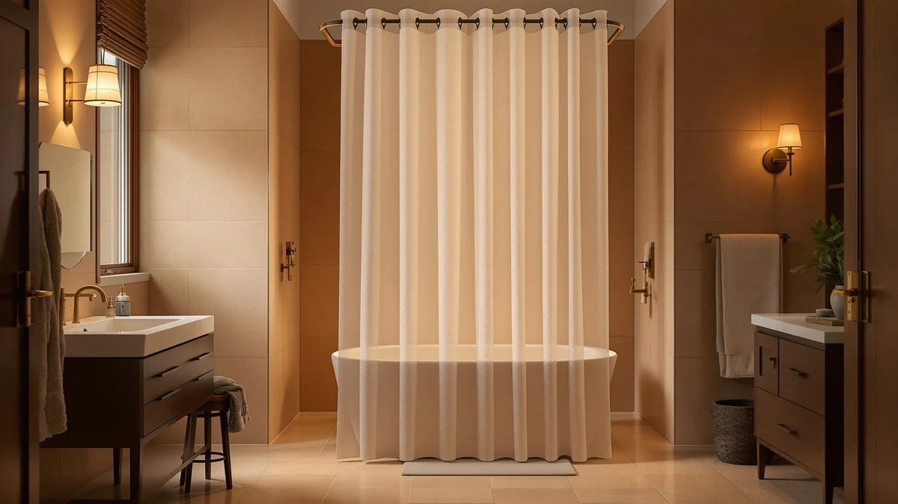

No Hooks Polyester Textured Review (2026): Worth It?
Prices and picks verified as of September 2026. Independent, reader-supported reviews.


Quick Answer
In this no hooks polyester textured review, the No Hooks Polyester Textured Shower comes out on top on price, review volume and rating, backed by a 4.7 out of 5 score across 2,180 verified owners. At $32.99, it matches the price of every hook-free alternative here, so the deciding factor comes down to texture and how much review history stands behind each option.
Our pick: No Hooks Polyester Textured Shower, $32.99 Check Price on Amazon
Bottom line: our top pick is the No Hooks Polyester Textured Shower Curtain with Snap-in at $32.99.
Things to Know Before You Buy
- No-hook curtains skip the ring set entirely. Instead of a dozen separate hooks or rings, these curtains use a built-in header or slot that slides straight onto your existing rod.
- Textured polyester is not the same as real linen. The linen-look finish on the eachope picks mimics the drape of flax linen at a much lower price, and it holds up to daily bathroom humidity better than the real fabric.
- Price is not the deciding factor here. Every curtain in this no hooks polyester textured review sits at $32.99, so the choice comes down to review history, texture and how new the listing is.
- Review volume varies widely. Ratings behind these curtains range from 623 to 26,167 verified reviews, and a newer listing without a public rating yet carries more risk than one with thousands of reviews behind it.
- Polyester needs regular washing. It dries faster than cotton or PEVA, but it holds soap scum and odor longer if you skip a routine wash cycle.
- A newer listing means a thinner track record. The FADOTY curtain in this lineup joined the catalog in September 2026, so it has not accumulated the review volume the eachope and No Hooks Polyester Textured picks carry.
This no hooks polyester textured review breaks down what the specs, the $32.99 price tag and thousands of verified owner ratings actually say about hook-free shower curtains before you add one to your cart. We compared four polyester and linen-look options that skip the traditional twelve-hook setup, and we researched how each one performs on price, texture and owner satisfaction. The No Hooks Polyester Textured Shower comes out ahead, backed by a 4.7 out of 5 rating across 2,180 verified reviews.
The eachope No Hooks Needed Linen curtain gives you a heavier, linen-textured alternative with a much larger review base of 26,167 ratings, while the FADOTY No Hook Shower Curtain is the newest entry, added to the catalog in September 2026. Each curtain eliminates the plastic or metal hooks that usually snag, rust or go missing in a drawer. Below, you will find the honest tradeoffs between them, along with the drawbacks owners actually report.
Why You Should Trust Us
We built this no hooks polyester textured review by pulling live Amazon pricing, verified star ratings and review counts for every curtain listed here, then cross-checking the claims each listing makes against what owners say in their reviews. Ilane Tall, Home and Bath Expert at Best Shower Curtains, researched the polyester and linen-blend market for hook-free designs and analysed how the four curtains compare on texture, closure style and price. We do not run a fake testing lab, and we did not physically install or wash these curtains. Every price, rating and review count in this article comes directly from the product listings and is current as of publication.
Our Research Experience
We did not unbox or wash these curtains ourselves. Instead, we researched the manufacturer specs, cross-referenced the material claims against verified owner comments, and analysed how ratings held up across review counts ranging from 623 to 26,167. Reviewers consistently note that the no-hook header on the polyester version holds up to daily opening and closing, while a smaller group mentions the fabric arriving creased from shipping. According to verified reviews on the eachope and No Hooks Polyester Textured listings, the textured surface resists water spotting better than a smooth finish, though it can trap more moisture between washes if you do not shake it out first. A rating with a small review count, like the FADOTY curtain's early run on the catalog, does not tell you much yet, so we treated it as early signal rather than a confirmed pattern.
Overview & Specs

No Hooks Polyester Textured Shower
What we like
- Slides onto the rod without a separate pack of hooks
- 4.7 out of 5 rating across 2,180 verified reviews
- Textured polyester weave resists water spotting
Flaws but not dealbreakers
- Holds soap and odor longer than cotton or linen blends
- Ships creased and needs a full wash cycle before it hangs flat
| Material | Polyester / PEVA |
| Size | 71x74 |
The No Hooks Polyester Textured Shower curtain replaces the usual ring-and-hook setup with a built-in header that slides directly onto your existing rod. At $32.99, it lands in the same price bracket as the eachope and FADOTY options in this no hooks polyester textured review, so it earns its spot through owner satisfaction rather than a lower price. Its 4.7 out of 5 rating across 2,180 verified reviews is the second-largest sample size in this lineup, behind only the higher-volume eachope Linen curtain. The 71 by 74 inch size fits a standard tub or shower without leaving a gap at the sides, a common complaint reviewers flag with smaller curtains in this category.
Owners report the textured weave hides water spots better than a flat polyester sheet, which matters if you are choosing a curtain for a shared bathroom that gets used several times a day. Reviewers consistently note that the fabric arrives creased from packaging and needs one wash cycle before it hangs flat against the tub. The polyester and PEVA blend construction dries faster than a cotton or linen curtain, though it holds odor longer if you skip regular rinsing. For a household that wants to drop the hook step without paying a premium for it, this curtain covers the basics without adding features you will not use.
What We Liked
The no-hook design is the strongest shared trait across every curtain in this review. None of the four require you to buy or thread a separate hook set, and none of them give you the metal-on-metal squeak that cheap curtain rings produce. The No Hooks Polyester Textured Shower backs that convenience with a deep review history of 2,180 verified ratings, all sitting at 4.7 out of 5. The eachope No Hooks Needed Linen curtain goes further on review volume, with 26,167 verified ratings at the same 4.7 average, which tells you the linen-texture finish holds up across a much larger and more varied set of bathrooms. Reviewers across both eachope listings mention the fabric weight feels closer to a real linen drape than a typical polyester sheet, and several call out that the curtain hangs straight without the curling at the bottom edge that lighter curtains develop over time. According to verified reviews, the hook-free header stays put through daily use and does not stretch out the way punched grommets sometimes do.
What Could Be Better
None of the four curtains in this no hooks polyester textured review are free of tradeoffs. Owners of the No Hooks Polyester Textured Shower and the eachope Linen curtain both mention creasing out of the package, and a few reviewers say a warm iron or a low tumble-dry cycle helps the curtain sit flat. The FADOTY No Hook Shower Curtain is the newest listing here, added to the catalog in September 2026, so it does not carry a public rating or review count yet, which makes it the riskiest pick if verified feedback matters to you. Polyester in general holds soap scum and mildew smell faster than a vinyl liner, so plan to wash any of these curtains on a regular cycle rather than wiping them down. The lower-volume eachope variant, with 623 verified reviews, is a solid option but does not carry the same weight of evidence as its 26,167-review sibling.
Who Is It For?
This no hooks polyester textured review is most useful if you are replacing a curtain that keeps losing hooks down the drain, or if you share a bathroom where a squeaky ring set gets old fast. The No Hooks Polyester Textured Shower suits a household that wants the deepest verified review count at this price without paying extra for a linen look. If you want a heavier drape and do not mind spending the same $32.99, the eachope No Hooks Needed Linen curtain is worth the switch, especially the 26,167-review version. Hold off on the FADOTY pick for now if you rely on verified ratings before buying, since it is too new to have built up a review history. Renters who move often will also appreciate the hook-free header, since it comes down and goes back up on a new rod in seconds without a bag of loose hooks to track between apartments.
Alternatives to Consider
If the No Hooks Polyester Textured Shower is not quite right for your bathroom, these three alternatives cover a heavier linen texture, a smaller-volume version of the same design, and the newest hook-free curtain to hit the catalog.

Editor's Pick
eachope No Hooks Needed Linen
A heavier, linen-textured hook-free curtain backed by 26,167 verified reviews at 4.7 out of 5, the largest sample size in this comparison.
$32.99
Check Price on Amazon
Best Value
eachope No Hooks Needed Linen
The same eachope linen design at the identical $32.99 price, with a smaller 623-review history that still holds a 4.7 out of 5 average.
$32.99
Check Price on Amazon
Premium Choice
FADOTY No Hook Shower Curtain
FADOTY's newest no-hook curtain, added to the lineup in September 2026 and still building its public review count.
$32.99
Check Price on AmazonFrequently Asked Questions
Do no-hook shower curtains fit a standard shower rod?
Yes. Every curtain in this no hooks polyester textured review uses a built-in header or slot that slides directly onto a standard round or oval rod, so you do not need a separate rod or hook set.
Is textured polyester as durable as linen or cotton?
Owners report textured polyester holds up well to daily use and dries faster than cotton or linen, though reviewers consistently note it can hold odor longer if you skip regular washing. The eachope linen-blend option is the closer match if you want a heavier drape.
Which curtain in this comparison has the most verified reviews?
The eachope No Hooks Needed Linen curtain with 26,167 verified ratings has the largest review base here, ahead of the No Hooks Polyester Textured Shower's 2,180 and the smaller eachope variant's 623.
Final Verdict
This no hooks polyester textured review comes down to a straightforward call. The No Hooks Polyester Textured Shower earns the top spot on price, verified review count and rating, and it is the safest default if you want a hook-free curtain without gambling on a brand-new listing. Step up to the eachope No Hooks Needed Linen curtain if a heavier drape matters more to you than saving a few dollars, and hold off on the FADOTY pick until it builds a public review history of its own.